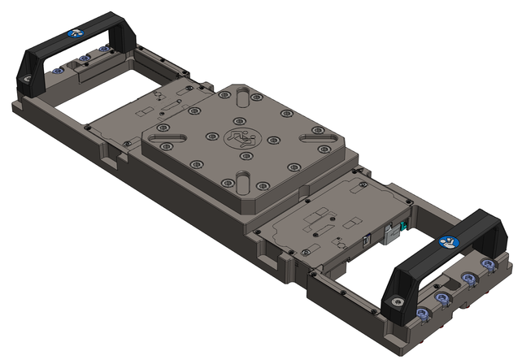
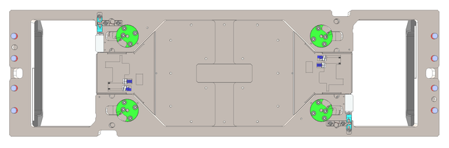
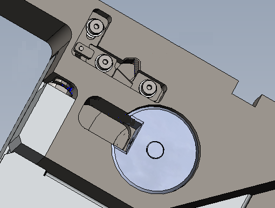
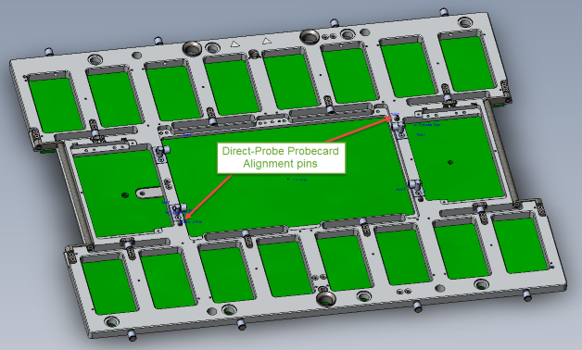

Bridge Beam Direct Probe for WSRF and PMUX (E8016BBWS)
The E8016BBWS bridge beam for WSRF and PMUX has two cut out areas so that the front end modules can access the DUT board or the Direct-Probe™ probe card.
- certified tolerances, matching with Advantest made probe card stiffeners, for trouble free operation,
- cam lock interlock with probe cards eliminates realignment need after cleaning interval.

Bottom view:

Availability
The E8016BBWS bridge beam is available from Advantest.
Supported PMUX and WSRF configurations
- PMUX: Maximum four MUX cards per frame assembly are supported. For more information, refer to MUX cards filling rules and MUX cards pogo block numbering.
- WSRF: Maximum two RFIM-6 modules or one RFIM-18 module per frame assembly are supported in the inner four slots (Pogo block positions 901 … 904 and 909 … 912). For more information, refer to Wave Scale RF with RFIM-6/RFIM-8 pogo pin assignment and Wave Scale RF with RFIM-18 pogo pin assignment.
Improved probe card interlock
Advantest Direct-Probe™ bridge beams feature a new probe card interlock with superior XY repeatability after cleaning step.
|
 |
This interlock improves the probe card alignment after probe head cleaning. During card clamp operation, the Direct-Probe™ bridge beam pushes and holds the probe card alignment pins to the reference point and restricts the XY card movement. |
As shown in the following graphics, the improved probe card alignment refers to guide pins 1 (top right) and 4 (bottom left) in the outer positions but guide pin 2 (bottom right) is also required.

Functional changes
- Introduced in SmarTest 7.5.3 / 8.3.0